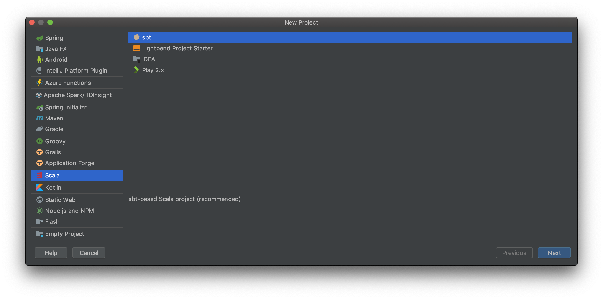
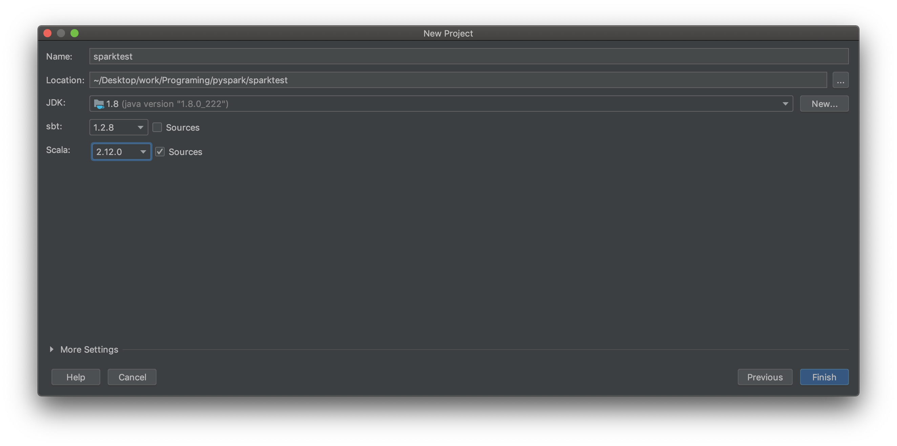

技術

IntelliJ IDEAでのSparkアプリケーション開発方法（Scala編）
前回に引き続きSpark環境構築系のおはなし。
Scala、何で開発してますか
VScode，AtomなどのエディタやEclipse，NetBeansなどのIDE，開発内容によって様々だと思います。
自分は簡単なコードだとScala(Metals)とScalaSnippetsの拡張機能を入れてVscodeを利用，Pluginを利用するものだったり複雑なコードだとIntelliJ IDEAを利用しています。
SparkアプリケーションをIntelliJ IDEAで開発する方法がとても便利だったので記録に残しておきます。
前提条件
- Spark2.4がインストールされていること
- IntelliJIDEAがインストールされていること
- IntelliJIDEAでScalaを開発することができること
- Java8がインストールされていること
- JDK8を用いて開発できること
（[File]=>[Project Structure…]=>左カラムのSDKsを選択=>JDKhomepathを変更からJDKの追加はできます）
環境
- OS：Mac
- Spark：2.4.5
- IntelliJIDEA：2019.3
プロジェクト作成
Scala=>sbt でプロジェクトを作成します。

Name，Location：任意
JDK：1.8
sbt，Scala：現在安定して動くもの（ここではsbt1.2.8，Scala2.11.0）
入力が終わったら[Finish]を押します。

Sparkを使えるようにする
targetの配下にあるbuild.sbtにSparkのPluginを追加します。バージョンなどはMVNREPOSITORYサイトを参考にします。
name := "sparktest"
version := "0.1"
scalaVersion := "2.11.0"
libraryDependencies ++= Seq(
"org.apache.spark" %% "spark-core" % "2.4.0",
"org.apache.spark" %% "spark-sql" % "2.4.0",
"org.apache.spark" %% "spark-mllib" % "2.4.3",
"org.apache.spark" %% "spark-graphx" % "2.4.0",
"org.apache.spark" %% "spark-streaming" % "2.4.0"
)
無事インポートが成功したらSpark環境は完了です。
コーディング
src=>main=>scalaを右クリック New=>Scala Classで任意の名前[Class]を作成します。
Main.scalaを編集します。ここではJSONファイルを単語集計したものをテキストファイルに保存するコードを書いていきます。
import org.apache.spark.{SparkConf, SparkContext}
import com.fasterxml.jackson.databind.ObjectMapper
import com.fasterxml.jackson.module.scala.DefaultScalaModule
object example {
def main(args: Array[String]): Unit = {
// Sessionの生成
val conf = new SparkConf().setAppName("appname").setMaster("local[*]")
val sc = new SparkContext(conf)
val jsonLines = sc.parallelize(Array(
"""{"name" : "Apple","num": 1}""",
"""{"name" : "Orange","num": 4}""",
"""{"name" : "Apple","num": 2}""",
"""{"name" : "Peach","num": 1}"""
))
val result = jsonLines.mapPartitions {lines =>
//JSONのパーサを初期化
val mapper = new ObjectMapper()
mapper.registerModule(DefaultScalaModule)
//JSON文字列をパースし、"name"と"num"のペアで返却
lines.map {line =>
val f = mapper.readValue(line,classOf[Map[String,String]])
(f(f"name"),f("num"))
}
}
// savedirに集計結果を保存
result.saveAsTextFile("savedir")
}
}
実行
Terminal上でjarファイルを生成します。
$ sbt package
spark-submitを使って実行
$ $SPARK_HOME/bin/spark-submit
savedir上に集計結果が保存されていることを確認します。
$ cat savedir_part*
(Apple,1)
(Orange,4)
(Apple,2)
(Peach,1)
終わり
実行毎にspark-submit〜と打つのは煩雑ですが、予測候補が出てくるのは開発する上での嬉しい＆助かる機能です🥰